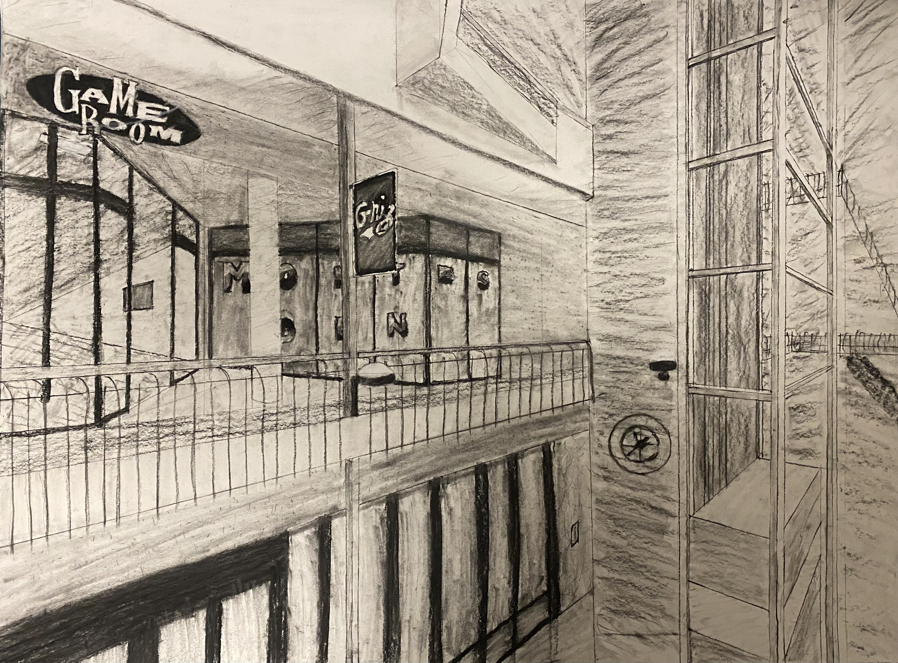
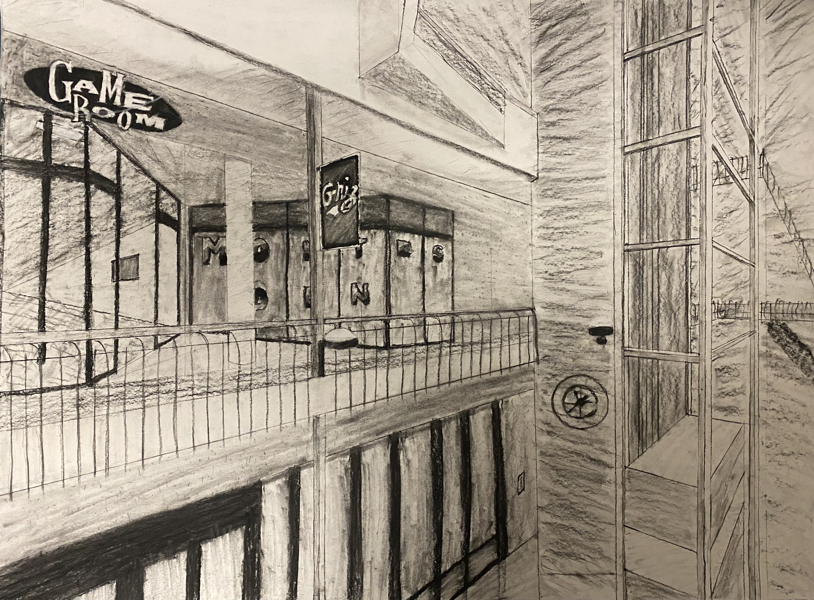

Brannt starts his little adventure off in a small town of Colorado. He lives there until he is somehow transported to Kalispell, Montana. What a weird place! Why are the mountains so far away? In this new place, Brannt learned to ride a bike, read and write, and make new friends. As he grew older, he studied hard to make his dream come true. He wanted to become a game designer! When he became of age, he applyed to the Univercity of Montana. Once he got in, he took a coding class and really liked it! Then he started writing a short story. The rest is in the future...
Here are some of Brannt's artworks from his first semester at college:

 
